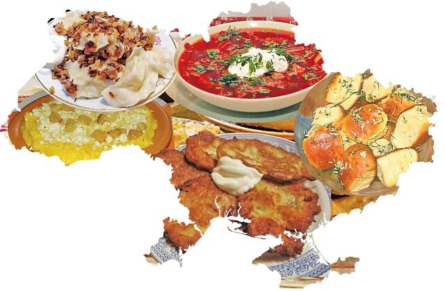
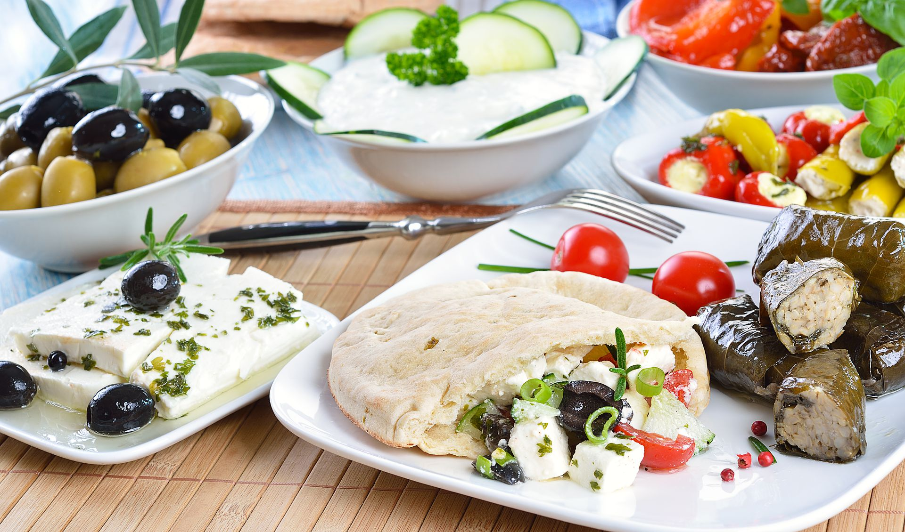
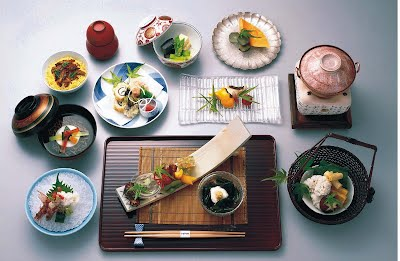
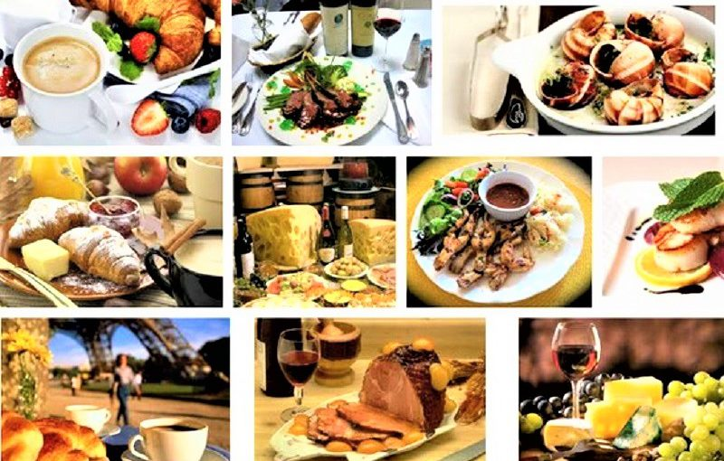
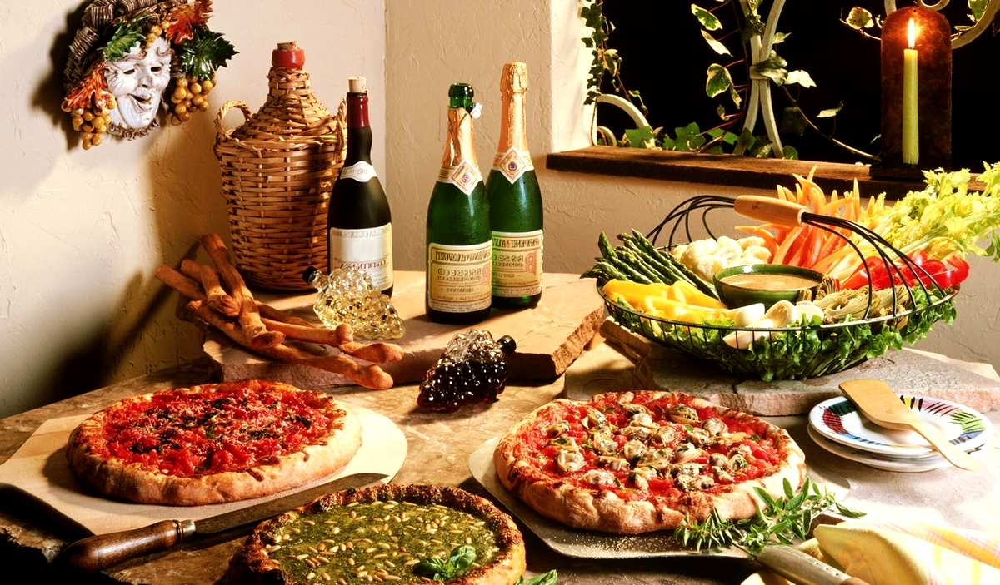
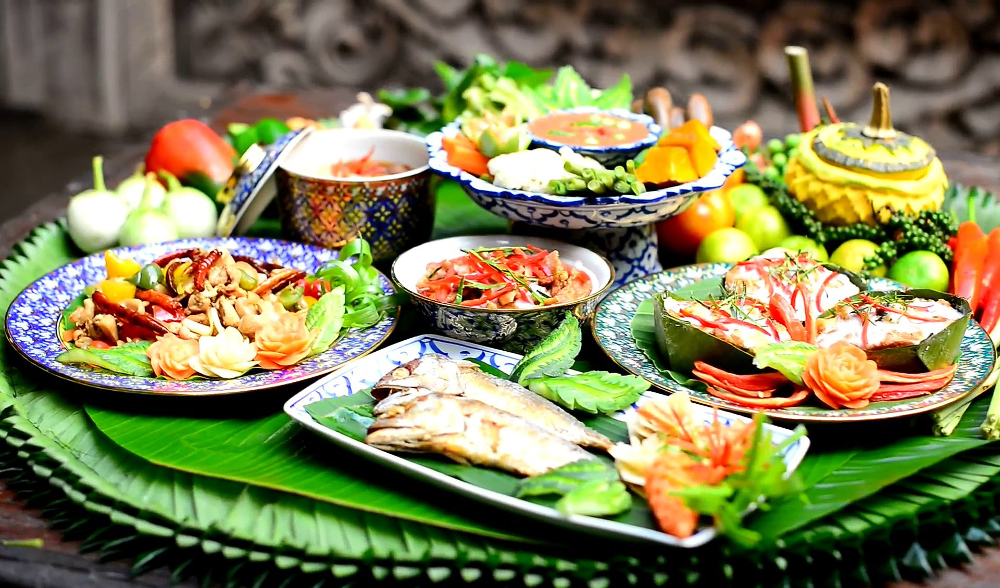

Кухня народів світу
Цілий світ на тарілці!
Переконайтеся, що кухня зовсім не має бути нудною та монотонною. Запрошуємо на чудову подорож навколо світу смачним кулінарним маршрутом. Підкажемо, як пізнати ще більше страв, котрі порадують ваш смак. З нами довідаєтеся також, які звичаї панують за кухонними столами. Котрий гарнір буде найсмачнішим? Чи спокуситеся на сонячну кухню Італії, вогняну Мексику, вишукану Францію, чи, може, незрівнянний аромат Сходу? Довідайтеся про це вже зараз.
У кожної країни є свої кулінарні традиції. Як правило, регіональні страви базуються на місцевих інгредієнтах і спеціях, а рецепти їх приготування дбайливо зберігаються і передаються з покоління в покоління. Для приготування страви можуть використовуватися найрізноманітніші способи теплової обробки, тому для жителів інших країн певне поєднання продуктів і спосіб приготування може здатися навіть дивним. Проте багато хто з цих страв є предметом національної гордості.
Країни нашої подорожі:
- Греція
- Японія
- Франція
- Італія
- Таїланд
Греція.Справжній смак грецької їжі можна зрозуміти, завдяки найновішим корисних продуктів - будь то восьминоги або маслини. Кухня керується простими правилами, тут не прийнято маскувати оригінальний смак або ховати його. Та й чи треба це робити, коли йдеться про апетитних овочах, тільки що випеченому хлібі або свіжому улові середземноморської риби? Головною подією дня є обід, на якому стіл приймає цілу вервечку з страв, що подаються в міру готовності.
Японія. Ресторани суші виростають в містах по цілому світі, ніби гриби після дощу. Білий рис і соя – це інгредієнти, котрих слід очікувати майже в кожній страві. Японська кухня дивує, і не кожному підходить її простота та строгість форми й вмісту. Їжа в Японії – це не лише заспокоєння потреб людини, але також естетичне та містичне пізнання. Важливими є емоції, які викликає вигляд гарно поданої страви, настрій, а також стан душі та серця.
Франція. У цій країні люблять поїсти. Французька їжа славиться на весь світ - від равликів і багетів, до сирів і шампанського. Кухня тут грайлива і кокетлива, заграючи з гурманом своєю різноманітністю. В країні м'який клімат, а багата історія і різноманітні географічні умови дозволяють регіонам культивувати власні гастрономічні шедеври. У Франції головним прийомом їжі вважається ланч, хоча останнім часом двогодинний забіг по прийому страв стає все більш неактуальним. Тепер більше уваги приділяють просто розгорненого обіду, оптимально він приготований в домашніх умовах і складається з шести різних страв.
Італія.І Хтось експортує технології, хтось-природні копалини, а ось Італія славиться своєю їжею. Невипадково весь світ цінує італійську кухню. Хоча між регіонами країни зустрічаються досить сильні кулінарні відміну, можна легко назвати кілька продуктів, які підкреслять кулінарний статус держави. Хіба хтось може відмовитися від найтоншої піци? А згадки про пасту або різотто не змушують текти слинки? А запити це можна знаменитим і якісним вином. Десерт ж краще всього буде запити кави. Тут його вміють варити, як ніде більше. У справі смаження зерен італійці досягли бездоганності, а сам гарячий напій м'яко розливається в чашки, заповнюючи все навколо своїм ароматом.
Таїланд. Унікальність тайської кухні в тому, що в ній поєдналися традиції Китаю, Індії та Океанії. У результаті була створена техніка, увібрала все найкраще і вміє працювати з найсмачнішими інгредієнтами. У Таїланді страви традиційно щедро заправляють чилі і часником. Іншими традиційними елементами місцевої кухні є сік лайма, коріандр і лимонне сорго. Завдяки їм страви отримують класичний різкий присмак, що є типовим для тайської їжі. Закохатися в місцеву незвичайну кухню можна завдяки хоча б креветочной пасти або знаменитого соусу для риби.
Описані вище кухні світу – це лише початок кулінарного маршруту. Смачних зупинок набагато більше. Ось ваш довідник по захоплюючих смаках кухонь світу. Варто також інколи зробити перерву у своїх мандрах і спробувати вибрані рецепти страв певної кухні. СМАЧНОГО!